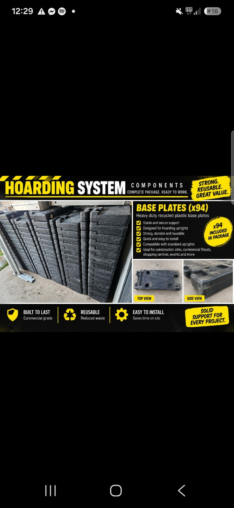
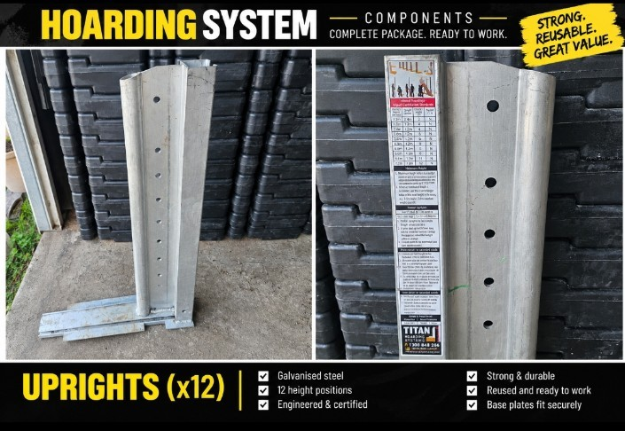
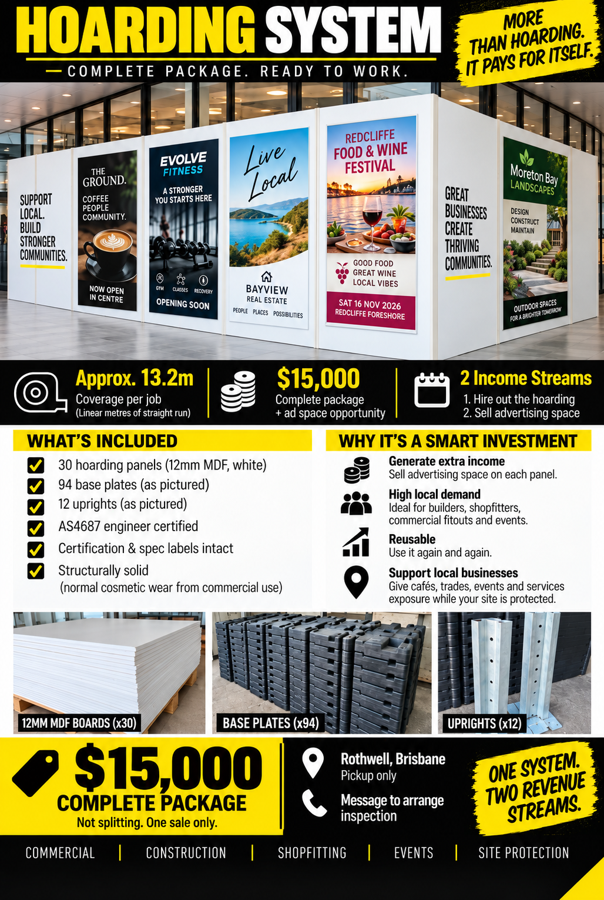

A complete commercial internal hoarding asset with an established market, a proven commercial application, clear market benchmarks and a strong second-income opportunity through approved advertising.
Prepared for MelRothwell, BrisbaneComplete packageA straightforward look at the asset, the market, the numbers and the potential to grow from one system.
I originally acquired the Titan system with the intention of developing the commercial opportunity around it myself. The hire model, shopping-centre approach, advertising concept and expansion ideas in this proposal are the ideas and plans I had been developing for how I could establish and grow the business.
I am now moving in a different direction personally and relocating overseas, so rather than continuing to build the business myself, I have decided to sell the complete system.
This is the simplest way I looked at the opportunity. The hoarding hire is the core income. If advertising is approved on the public-facing wall, that becomes the cream on top: a second revenue stream from the same deployed asset.
| Illustrative rate | 13.2m system |
|---|---|
| $240 per linear metre | $3,168 gross |
| $300 per linear metre | $3,960 gross |
| $350 per linear metre | $4,620 gross |
| $400 per linear metre | $5,280 gross |
Published Australian commercial-hoarding guidance currently cites approximately $240–$400 per linear metre for standard work. Actual rental structures vary by duration, specification, access, installation, certification and removal. The $300/m example is used here as a simple planning figure, not a quoted or guaranteed rate.
If the centre approves commercial content on the customer-facing hoarding, the same wall can potentially produce a second income stream while it is already deployed.
| Illustrative four-week advertising scenario | Advertising revenue |
|---|---|
| 6 approved positions × $250 | $1,500 |
| 6 approved positions × $500 | $3,000 |
| 6 approved positions × $750 | $4,500 |
These advertising figures are business-model scenarios, not published market rates. Centre/property-owner approval, artwork requirements, production costs and any centre fee or revenue share would need to be agreed.
| One illustrative monthly deployment | Hoarding only | Hoarding + advertising |
|---|---|---|
| Hoarding revenue | $3,960 | $3,960 |
| Advertising revenue | — | $3,000 |
| Gross revenue | $3,960 | $6,960 |
| Illustrative direct costs | ~$1,500 | ~$2,500 |
| Indicative contribution | ~$2,460 | ~$4,460 |
Contribution is before general business overhead, tax, finance and owner drawings. The cost allowances are planning assumptions and must be replaced with Mel's actual installer, transport, print, insurance and centre costs.
| 12-month illustration | Hoarding only | Hoarding + advertising |
|---|---|---|
| Gross revenue × 12 deployments | $47,520 | $83,520 |
| Illustrative direct costs × 12 | ~$18,000 | ~$30,000 |
| Contribution before overhead/tax | ~$29,520 | ~$53,520 |
This assumes 12 completed monthly deployments. Real utilisation could be lower or higher, and some projects may remain installed for longer than a month. BSG states that internal shopfront hoarding can be rented per linear metre per week or month, confirming that duration is part of the commercial pricing model.
Commercial hoarding provides the foundation. The real upside is that the same customer-facing wall can also create approved advertising and promotional inventory while it is deployed. One asset can therefore potentially earn in two ways.
Everything below forms part of the complete $15,000 package, ready for collection from National Storage, Rothwell.
| Component | Qty |
|---|---|
| Titan engineered uprights | 12 |
| Structural framing posts | 12 |
| Titan counterweights / base weights | 94 |
| White 12 mm MDF hoarding panels | 30 |
| Purpose-built industrial transport trolley | 1 |
| Titan certification/specification labels | Included / intact |


Earlier sales material used a larger coverage estimate. This proposal deliberately replaces that with the more conservative engineering-based planning figure using approximately 1.2 m upright centres.
Titan systems are used in shopping centres, retail fit-outs, commercial buildings, hospitals and other public-facing environments where construction work needs to be separated from customers and staff.
BSG Commercial's 2026 Australian guide publishes approximately $240–$400 per linear metre for standard Class A commercial hoarding. These are project-cost benchmarks, not guaranteed equipment-only rental rates.
| Illustrative benchmark | 13.2m gross project value |
|---|---|
| $240/m | $3,168 |
| $250/m | $3,300 |
| $300/m | $3,960 |
| $350/m | $4,620 |
| $400/m | $5,280 |
Using a deliberately conservative working example of a $4,000 gross hoarding job, the initial $15,000 purchase price is equivalent to fewer than four gross job invoices. The more useful measure is what remains after direct job costs.
| Illustrative $4,000 job | Contribution after direct job costs | Approx. jobs to equal $15,000 |
|---|---|---|
| Higher-cost job: $1,500 direct costs | $2,500 | 6 jobs |
| Middle example: $1,000 direct costs | $3,000 | 5 jobs |
| Efficient job: $750 direct costs | $3,250 | about 5 jobs |
Illustrative modelling, not a forecast. Direct costs will depend on labour, transport, installation/removal, insurance, compliance, maintenance and the individual site. Advertising income is not included in this payback table, so any approved advertising revenue would be additional.
The hoarding earns through the commercial job itself. At the same time, its customer-facing surface creates temporary media space in a high-foot-traffic environment. Subject to property-owner/centre approval, selected panels could carry incoming-tenant graphics, centre promotions, local business advertising, events or community campaigns. This is the key dual-revenue opportunity: hire revenue from the hoarding + advertising revenue from the same deployed asset.
| Illustrative 4-week price / position | 6 approved positions |
|---|---|
| $250 | $1,500 |
| $500 | $3,000 |
| $750 | $4,500 |
Illustrative scenarios only. Deduct design, printing, installation/removal, sales/admin and any centre fee or revenue share.

Mel already has an established relationship with the shopping-centre Managing Director and has recently negotiated her own new shop lease. That creates a natural opportunity to open a commercial conversation around both the hoarding service and the advertising concept.
The aim is simply to open the conversation and understand what commercial and approval model could work for that centre.
The market is established and the model is repeatable. As utilisation grows, additional compatible equipment can increase capacity, allow simultaneous deployments and create more advertising inventory. The next section puts numbers around what that duplication could look like over five years.
The larger opportunity comes from duplication. One system establishes the real utilisation, pricing and margins. Additional inventory then creates the capacity for simultaneous deployments. Advertising, where approved, can increase the revenue produced by each customer-facing deployment.
| Stage | System-equivalent capacity | Illustrative deployments / year | Gross revenue at $6,960 / deployment |
|---|---|---|---|
| 12 months | 1 | 12 | $83,520 |
| Year 2 | 3 | 30 | $208,800 |
| Year 3 | 6 | 60 | $417,600 |
| Year 4 | 10 | 100 | $696,000 |
| Year 5 | 15 | 150 | $1,044,000 |
This is a capacity-and-revenue model, not a sales forecast. It assumes the combined advertising scenario is achieved on each modelled deployment. In practice, some jobs may carry no advertising, while other jobs may price above or below the working assumptions.
Revenue at this scale is not profit. Growth requires installation and dismantling labour, transport, storage, insurance, administration, maintenance, sales, advertising production and potentially multiple crews. Using the same combined-deployment example, approximately $2,500 of direct cost per deployment has been allowed before general overhead.
| Stage | Gross revenue | Direct job costs at ~$2,500/deployment | Contribution before overhead/tax |
|---|---|---|---|
| 12 months | $83,520 | ~$30,000 | ~$53,520 |
| Year 2 | $208,800 | ~$75,000 | ~$133,800 |
| Year 3 | $417,600 | ~$150,000 | ~$267,600 |
| Year 4 | $696,000 | ~$250,000 | ~$446,000 |
| Year 5 | $1,044,000 | ~$375,000 | ~$669,000 |
General overhead, tax, finance and owner drawings still need to come out of these contribution figures. As the business becomes larger, overhead would materially increase and should be budgeted from actual operating data.
The growth idea I had was not simply to take all early profits out of the business. A portion could be retained and reinvested into additional compatible Titan equipment, panels, transport and installation capacity whenever actual demand justified the next expansion.
The handover is simple.
The proposal intentionally uses external evidence for the market and clearly labels illustrative financial scenarios.
Titan Hoarding Systems Australia — manufacturer / technical information ↗1300Hoarding — internal retail Titan hoarding ↗BSG Commercial — 2026 Australian hoarding cost guide ↗Eagle Rock Construction — Queensland Titan hoarding services ↗Scentre Group BrandSpace — shopping-centre media context ↗